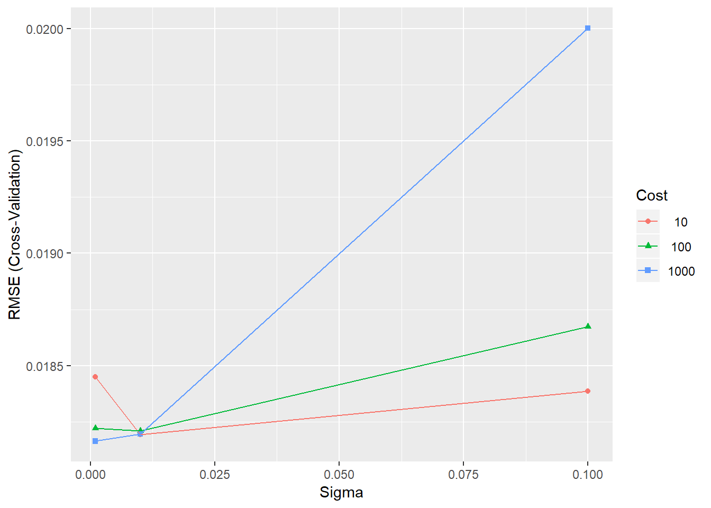

4 Support Vector Regression
4.1 Introduction
In this section, the methodology Support Vector Regression (SVR) is applied for travel-time prediction. SVR is a computational technique that has its root on machine learning (ML) strategies. Machine learning uses past data to make accurate predictions of future events. Learning3 refers to the iterative process of finding a classifier or regression algorithm with optimal solution by means of training data, and then to test simulation data under the same parameters.
The focus of ML is on generalisation, the ability of the algorithm to predict unseen data samples. It stands as a different approach of classical statistics, where the focus is on in-sample performance and different to data mining which seeks to discover new knowledge from unlabelled data. ML does not assume that the functional form of the relationship between dependent and independent variables is known and can be described by model parameter.The technique minimizes error on unseen data, known as structural risk minimization, with no prior assumptions made on the probability distribution of the data.
The feasibility of applying SVM in travel-time prediction is demonstrated in this section, the results and analysis are further presented.
4.2 Support Vector Regression (SVR)
SVR is an extension of ML technique known as support vector machine (SVM), to regression problems. SVMs make use of a hypothesis space of linear functions in a feature space, trained with a learning algorithm from optimisation theory. An important aspect of SVM is that not all the available training examples are used in the training algorithm. The subset of points that lie on the margin (called support vectors) are the only ones that defines the hyperplane of maximin margin.
load("myWorkSpace.RData")
knitr::opts_chunk$set(error = TRUE)![Linear support vector machine *[source: @R-burges]*.](Images/SVR.png)
Figure 4.1: Linear support vector machine (source: C.J.Burges 1998).
SVR has greater generalization ability and guarantee global minima for a given training data. SVMs techniques are grounded in the basic principle that for a given learning task, with a given finite number of training data, the best generalization performance will be achieved if the right balance is struck between the accuracy attained and the capacity of the machine to learn any training set without error (C.J.Burges 1998).
Figure 4.1 presents the classic example of linear support vector machine. SVM algorithms use a set of kernel functions. The function of kernel is to take data as input and transform it into the required form. Kernel methods in ML are used in a different way comparing to spatial analysis (e.g. Kernel Density Estimation, KDE). Instead of being applied to spatial distances, they are applied to distances between sets of variables. Different SVM algorithms use different types of kernel functions, for example linear, nonlinear, polynomial, radial basis function (RBF), and sigmoid. Figure 4.2 presents the basic scheme of kernel function method applied to ML.
![Kernel to Machine Learning *[source: @R-cheng2]*.](Images/kernel.png)
Figure 4.2: Kernel to Machine Learning (source: T. Cheng 2019).
A kernel function is usually used to refer to the kernel trick, a method of using a linear classifier to solve a non-linear problem. It entails transforming linearly inseparable data like to linearly separable ones. Machine learning methods are widely applied to classification and regression problems. The best-known kernel method for regression is support vector regression (SVR), which is based on the principles of statistical learning theory (V. Vapnik 1995). Kernel methods convert linear algorithms for use on nonlinear data by projecting the input data into a high dimensional feature space in which a linear solution is found.
4.3 SVR to Predict Travel Time for Urban Road
The idea of the regression problem is to determine a function that can approximate (i.e. predict) future values accurately. The generic SVR estimating function takes the form:

Equation: 4.1
Where \(w\subset R^{n}\),\(b\subset R\) and denotes a nonlinear transformation from R^{n}, to high-dimensional space. The kernel function applied to the study is the Gaussian radial basis function (RBF):

Equation: 4.2
Where α > 0 is the kernel bandwidth.
SVR tries to find a function f (x) where the predicted values are at most ε from the observed values yi., i.e. they fit inside a tube of width 2ε.
![SVR predictive function*[source: @R-wu]*.](Images/svr_tube.png)
Figure 4.3: SVR predictive function(source: C.H. Wu 2004).

Equation: 4.3
\begin{FOO}
Where \(\zeta\) ~i and ^* ~i are slack variables used to measure errors outside the tube. All points that lie on or outside the margin are support vectors.
To train the SVR models, a better classification could be achieved by optimizing the parameters in some way. There are two parameters to train: the kernel parameter sigma and the constant c. The former is set to automatic by default. The constant C determines the amount of allowable error in the model, controlling the trade-off between model complexity and error. The value of c is not estimated and is set to 1. A large c assigns higher penalties to errors so that the regression is trained to minimize error with lower generalization, while a small assigns fewer penalties to errors. Allowing a large number of errors, the model would be less complex, thus providing higher generalization ability. On the other hand, If c is set with a high number, SVR would not allow the occurrence of any error and results would lead to a complex model. Therefore, it is worthwhile testing some values of c to see how they affect the results. Finally, epsilon determines the width of the tube.
4.4 Experiment Setup
The first part of the experiment is to train the dataset. The data have been divided into training (80%) and testing (20%) data. Four road links have been aleatory chosen to train the model: IDs 2112, 2061, 473 and 2087. To strategy applied to the model training procedure is composed of 4 steps presented on Figure 4.4.

Figure 4.4: Model Training Procedure steps.
To train the data, the package called caret (short for Classification and Regression Training) has been used. The library provides a set of functions that attempt to streamline the process for creating predictive models.4
Step 1: Build a time series SVR Model.
The first step is to rearrange the series in order to build a time series SVR model by means of a temporal autoregressive structure. The moving average uses past forecast errors to forecast future values of the series.
load("forecasting.RData") #first load the data to the space environement
library(kernlab) # install if necessary using 'install.packages'## Warning: package 'kernlab' was built under R version 3.5.2library(caret) # install if necessary using 'install.packages'## Warning: package 'caret' was built under R version 3.5.3## Loading required package: lattice## Loading required package: ggplot2## Warning: package 'ggplot2' was built under R version 3.5.2##
## Attaching package: 'ggplot2'## The following object is masked from 'package:kernlab':
##
## alphaTo build the model, we will use a temporal autoregressive structure. We use embed function to rearrange the series. This means we will forecast the future tt at a single location (link=2112) as a function of a subset of previous tt observations.
The resulting matrix can be used for one step ahead forecasting by using the first three columns as the independent variables and the fourth column as the dependent variable. In order to perform parameters tuning with k-fold cross-validation, three different embedding dimensions q have been applied: q=3: q=4 and q=5.
We will use the embed to rearrange the series in this way:
m <- 3
data.2112 <- embed(x = UJT [,"2112"], dimension = m+1) # embed: function to rearrange the series
colnames(data.2112) <- c("y_t-3","y_t-2","y_t-1","y_t")The function embeds the time series x into a low-dimensional Euclidean space. This way, it is possible to forecast the future temperature as a function of a subset of previous temperature observations. Each row of the resulting matrix consists of sequences x[t], x[t-1], …, x[t-dimension+1], where t is the original index of x. If x is a matrix, i.e., x contains more than one variable, then x[t] consists of the observation on each variable.
The resulting matrix can be inspected with the funcion head () which returns the first or last parts of the matrix. You will see that each row contains four observations, which are four consecutive tt observations. The first row of the matrix contains the first four observations from UJT[,“2112”] in reverse orde( e.g. column 4 is the first observation and column 1 is the 4th observation). In the second row, the first observation is removed from column 4 and the 5th observation is added to column 1. This matrix can be used for one step ahead forecasting by using the first three columns as the independent variables and the fourth column as the dependent variable.
head (data.2112) # Returns the first or last parts of a vector, matrix, table, data frame or function## y_t-3 y_t-2 y_t-1 y_t
## [1,] 0.1212617 0.1152238 0.1101922 0.09610367
## [2,] 0.1207585 0.1212617 0.1152238 0.11019217
## [3,] 0.1061669 0.1207585 0.1212617 0.11522378
## [4,] 0.1111985 0.1061669 0.1207585 0.12126170
## [5,] 0.1368597 0.1111985 0.1061669 0.12075854
## [6,] 0.1157269 0.1368597 0.1111985 0.10616689The same procedure could be applied to the other dimensions q=4 and q=5.
m <- 4
data.2112_d2 <- embed(x = UJT [,"2112"], dimension = m+1)
colnames(data.2112_d2) <- c("y_t-4" , "y_t-3","y_t-2","y_t-1","y_t")
m <- 5
data.2112_d3 <- embed(x = UJT [,"2112"], dimension = m+1)
colnames(data.2112_d3) <- c("y_t-5" , "y_t-4" , "y_t-3","y_t-2","y_t-1","y_t")Step 2: Divide data into training and testing sets.
The next step is to divide the embedded data into training and testing sets. The subset of training data is used to fit the model and the testing set to estimate model fitness. It should be noted that in temporal data there is a continuity component whereas it is important to take into account the ordering of time.
That said, based on a continuous data series, the first 80% data of the months have to be selected to train the model and the remaining 20% data has been selected to test the model. Hence, the particular training set S= {(Xi,yi), …,(Xi,yi)} has been drawn from the distribution of the random vectors y and X.
# divide data into training and testing sets - Dimension 1
split <- 4143 # UJT row to separe training and testing data
yTrain <- data.2112 [1:split,1]
XTrain <- data.2112 [1:split,-1]
yTest <- data.2112 [(split+1):nrow(data.2112 ),1]
XTest <- data.2112 [(split+1):nrow(data.2112 ),-1]
# divide data into training and testing sets - Dimension 2
split_d2 <- 4143 #UJT row to separe training and testing data
yTrain_d2 <- data.2112_d2 [1:split,1]
XTrain_d2 <- data.2112_d2 [1:split,-1]
yTest_d2 <- data.2112_d2 [(split+1):nrow(data.2112_d2 ),1]
XTest_d2 <- data.2112_d2 [(split+1):nrow(data.2112_d2 ),-1]
# divide data into training and testing sets - Dimension 3
split_d3 <- 4143 # UJT row to separe training and testing data
yTrain_d3 <- data.2112_d3 [1:split,1]
XTrain_d3 <- data.2112_d3 [1:split,-1]
yTest_d3 <- data.2112_d3 [(split+1):nrow(data.2112_d3 ),1]
XTest_d3 <- data.2112_d3 [(split+1):nrow(data.2112_d3 ),-1]Step 3. Perform parameters tuning with k-fold cross validation.
To determine the values of the tuning parameters, one approach is to use a resampling to estimate how well the model performs on the training set. There are different types of resampling methods, being k-fold cross-validation one of the most common types5. The process must be repeated many times and the performance estimates from each holdout set are averaged into a final overall estimate of model efficacy such that given the training set, the algorithm produces a prediction function f(x)= Փ(xi). For each parameter combination the model fitness is estimated via resampling and the relationship between the tuning parameters and the model performance is evaluated.
The k-fold cross-validation has been applied as resampling method, with k set to 5. In k-fold cross validation, the data are randomly partitioned into k-folds. Each fold is left out in turn and the remaining k-1 folds are used to train a model and predict its values. The selected model is the one with the best average performance across the k folds6. The procedure prevents overfitting to a subset of the training data.
The caret() package is used to perform the cross validation with a radial basis function kernel applied for parameter tuning. There are two tuning parameters: the radial basis function scale parameter bandwidth α, and the cost value associated with support vectors. To train the model we will use k-fold cross validation, with k set to 5.
#To train the model we will use k-fold cross validation, with k set to 5
ctrl <- trainControl(method = "cv", number=5) To test (at present, caret only allows sigma and C to be trained in this way so we cannot optimise over epsilon automatically) and train the model, a grid of parameters must be created.
# Create a grid of parameters to test and train the model with dimension 1
SVRGridCoarse <- expand.grid(.sigma=c(0.001, 0.01, 0.1), .C=c(10,100,1000))
SVRFitCoarse <- train(XTrain, yTrain, method="svmRadial", tuneGrid=SVRGridCoarse, trControl=ctrl, type="eps-svr")
SVRFitCoarse #parameters## Support Vector Machines with Radial Basis Function Kernel
##
## 4143 samples
## 3 predictor
##
## No pre-processing
## Resampling: Cross-Validated (5 fold)
## Summary of sample sizes: 3313, 3316, 3314, 3314, 3315
## Resampling results across tuning parameters:
##
## sigma C RMSE Rsquared MAE
## 0.001 10 0.01856390 0.7449754 0.01396254
## 0.001 100 0.01838648 0.7499501 0.01383970
## 0.001 1000 0.01831382 0.7518320 0.01375145
## 0.010 10 0.01833364 0.7513945 0.01377507
## 0.010 100 0.01836181 0.7505891 0.01377618
## 0.010 1000 0.01838592 0.7498638 0.01379780
## 0.100 10 0.01843801 0.7485884 0.01380886
## 0.100 100 0.01902256 0.7327731 0.01396250
## 0.100 1000 0.02159954 0.6691090 0.01421513
##
## RMSE was used to select the optimal model using the smallest value.
## The final values used for the model were sigma = 0.001 and C = 1000.ggplot(SVRFitCoarse)
Results are given for each of the parameter combinations in terms of the root mean squared error (RMSE), R squared and Mean Absolute Error (MAE). The results are displayed using the plot function.
To test the best performance, we might differentiate the values of the embedding dimension with the three different autoregressive orders have been used: q=3; q=4 and q=3.
# Create a grid of parameters to test and train the model with dimension 2
SVRGridCoarse_d2 <- expand.grid(.sigma=c(0.001, 0.01, 0.1), .C=c(10,100,1000))
SVRFitCoarse_d2 <- train(XTrain_d2, yTrain_d2, method="svmRadial", tuneGrid=SVRGridCoarse, trControl=ctrl, type="eps-svr")
SVRFitCoarse_d2## Support Vector Machines with Radial Basis Function Kernel
##
## 4143 samples
## 4 predictor
##
## No pre-processing
## Resampling: Cross-Validated (5 fold)
## Summary of sample sizes: 3314, 3315, 3314, 3315, 3314
## Resampling results across tuning parameters:
##
## sigma C RMSE Rsquared MAE
## 0.001 10 0.01841016 0.7479903 0.01380522
## 0.001 100 0.01819170 0.7540499 0.01365956
## 0.001 1000 0.01813995 0.7553125 0.01359487
## 0.010 10 0.01816902 0.7545156 0.01362127
## 0.010 100 0.01820220 0.7536119 0.01363948
## 0.010 1000 0.01832990 0.7501041 0.01370825
## 0.100 10 0.01849891 0.7456712 0.01378984
## 0.100 100 0.01895304 0.7329096 0.01396627
## 0.100 1000 0.02114658 0.6748830 0.01443227
##
## RMSE was used to select the optimal model using the smallest value.
## The final values used for the model were sigma = 0.001 and C = 1000.# Create a grid of parameters to test and train the modelwith dimension 3
SVRGridCoarse_d3 <- expand.grid(.sigma=c(0.001, 0.01, 0.1), .C=c(10,100,1000))
SVRFitCoarse_d3 <- train(XTrain_d3, yTrain_d3, method="svmRadial", tuneGrid=SVRGridCoarse, trControl=ctrl, type="eps-svr")
SVRFitCoarse_d3## Support Vector Machines with Radial Basis Function Kernel
##
## 4143 samples
## 5 predictor
##
## No pre-processing
## Resampling: Cross-Validated (5 fold)
## Summary of sample sizes: 3313, 3316, 3315, 3312, 3316
## Resampling results across tuning parameters:
##
## sigma C RMSE Rsquared MAE
## 0.001 10 0.01837965 0.7497511 0.01377965
## 0.001 100 0.01817232 0.7554023 0.01361674
## 0.001 1000 0.01816241 0.7555760 0.01358992
## 0.010 10 0.01821301 0.7541727 0.01361714
## 0.010 100 0.01822627 0.7536928 0.01364347
## 0.010 1000 0.01828293 0.7523292 0.01369578
## 0.100 10 0.01851410 0.7465000 0.01382016
## 0.100 100 0.01917074 0.7290892 0.01407848
## 0.100 1000 0.02148901 0.6681348 0.01477005
##
## RMSE was used to select the optimal model using the smallest value.
## The final values used for the model were sigma = 0.001 and C = 1000.ggplot(SVRFitCoarse_d2)
ggplot(SVRFitCoarse_d3)

For all dimensions, sigma = 0.001 and C = 1000 present the best outome, whereas q = 4 provides the best fit with RMSE = 0.01813995. However, it should be noted that smaller value of sigma could produce a better result.
We may achieve a better classification if we try to optimise the parameters in some way. There are two parameters to train: the kernel parameter sigma and the constant C. Sigma is set automatic by default. The value of C is not estimated and is arbitrary set to a. Therefore, its is important to test some more values for C.
We can refine the grid to see if we can gain further improvements in performance.
# Testing the grid to see if we can gain further improvements in performance: diferent sigma for d1
SVRGridFine <- expand.grid(.sigma=c(0.005, 0.05, 0.5), .C=c(5,50,500))
system.time(SVRFitFine <- train(XTrain, yTrain, method="svmRadial", tuneGrid=SVRGridFine,
trControl=ctrl, type="eps-svr"))## user system elapsed
## 224.39 3.66 228.55ggplot(SVRFitFine)
SVRFitFine## Support Vector Machines with Radial Basis Function Kernel
##
## 4143 samples
## 3 predictor
##
## No pre-processing
## Resampling: Cross-Validated (5 fold)
## Summary of sample sizes: 3314, 3314, 3315, 3314, 3315
## Resampling results across tuning parameters:
##
## sigma C RMSE Rsquared MAE
## 0.005 5 0.01841781 0.7489890 0.01384557
## 0.005 50 0.01833345 0.7514718 0.01375022
## 0.005 500 0.01837675 0.7503472 0.01376189
## 0.050 5 0.01838661 0.7502076 0.01377543
## 0.050 50 0.01851660 0.7463932 0.01382779
## 0.050 500 0.01920488 0.7282400 0.01394578
## 0.500 5 0.01889770 0.7358994 0.01399329
## 0.500 50 0.01980952 0.7102757 0.01433585
## 0.500 500 0.02209354 0.6490682 0.01493123
##
## RMSE was used to select the optimal model using the smallest value.
## The final values used for the model were sigma = 0.005 and C = 50.
```
Step 4: Select the model and apply predictive analysis.
The effectiveness of a model is commonly measured using a single statistic. For models predicting a numeric outcome, the fitness statistic might be the root mean squared error (RMSE) or the coefficient of determination (R2). For classification, where a discrete outcome is being predicted, the error rate might be an appropriate measure.
Examining and considering the RMSE index, the best performance can be pointed out for the road link. The model object for the best model is presented on figure 7.
The model for one-step-ahead prediction can be used to plot the results (figure 8). The model forecasts the TTs reasonably well. For road link 2112, the proportion of points used as support vector has been of 62% from the dataset.
# We can use the model for one-step-ahead prediction and plot the results
yPred <- predict(SVRFitCoarse_d2, XTest_d2)
plot(yTest_d2, type="l", xaxt="n", xlab="Observations", ylab="TTs")
points(yPred, col="blue", pch=21, bg="blue")
#axis(1, at=seq(90, (180*5)+90, 180), labels=unique(dates[(split+1):nrow(data),1]))
legend("topright",
"Observed", "Observed and Predicted")Finally, it is also important to check whether any temporal autocorrelation remains in the residuals of the model.
Figures 10 displays differenced ACF plot for the data of the series. The dashed lines are approximate 95% confident interval for the autocorrelation. Even though no significant overall autocorrelation is presented, it can be noted a higher autocorrelation up to lag 5. Additionally, no seasonal pattern could be noted.
# Check whether any temporal autocorrelation remains in the residuals of the model:
SVRResidual <- yTest_d2-yPred
plot(SVRResidual)
acf(SVRResidual)
4.5 Chapter Summary
The basic idea behind the development of SVMs is the same: for a given learning task, with a given finite number of training data, the best generalization performance will be achieved if the right balance is struck between the accuracy attained on that particular training set, and the ability of the algorithm to predict unseen data samples with a minimum of errors.
Finally, it is worth mentioning that the experiment applies time series only. It is possible to create a space-time model using the spatial weight matrix but since the spatio-temporal autocorrelation is weaker than the temporal autocorrelation (as previously discussed on the study), the model has not been applied.
References
C.J.Burges. 1998. “A Tutorial on Support Vector Machines for Pattern Recognition.” Data Mining and Knowledge Discovery 2: 121–67.
T. Cheng, J.Haworth. 2019. “Satio-Temporal Data Analysis and Big Data Mining.” University College London.
V. Vapnik, C. Cortes &. 1995. “Support-Vector Networks.” Machine Learning 20: 273–97.
C.H. Wu, J.M. Ho & D.T.Lee. 2004. “Travel-Time Prediction with Support Vector Regression.” IEEE Transactions on Intelligent Transportation Systems 4: 276–81.
Learning machine is just another name for a family of functions f(x,α).↩
For more information, see http://topepo.github.io/caret/index.html↩
Other common resampling methods are leave-one-out cross-validation, Monte Carlo cross-validation and the bootstrap↩
the optimal model is selected based on accuracy statistics↩